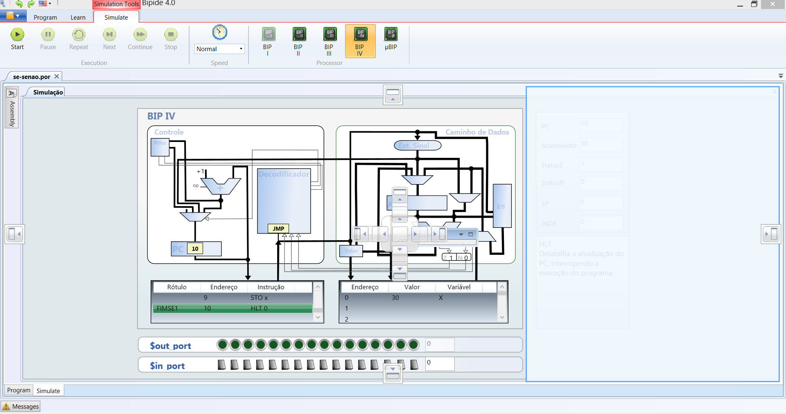
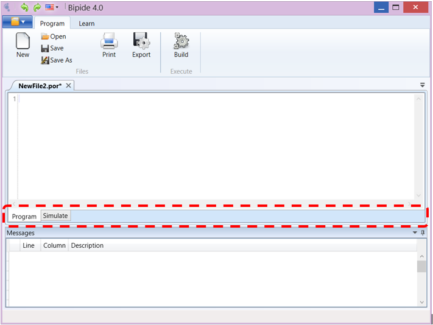

Enables the implementation and simulation of Portugol programs on the architecture of BIP I, BIP II, BIP III, BIP IV and µBIP processor.
Displays controls for simulation programs:
Lets you control the speed at which occurs the program simulation.
Selects the processor model used in the simulation:
Displays the Portugol or C program being simulated. The online program being simulated is highlighted.
Displays the assembly code generated by the compiler. The online program being simulated is highlighted. It is also highlighted a set of assembly instructions which correspond to a line of the program Portugol, allowing the user to check which assembly instructions were generated to perform a Portugol statement.
Displays the assembly code generated by the compiler. The online program being simulated is highlighted. It is also highlighted a set of assembly instructions which correspond to a line of the program Portugol, allowing the user to check which assembly instructions were generated to execute a statement Portugol.
Displaus switches and LED used in BIP IV processor for inbound and outbound operations.
Displays the register values during program execution.
Displays the description of the statement being executed.
You can choose the layout of interface elements.
flaps with high-level code and assembly are arranged to the left by default, but you can put them in another location on the screen.
You can return to the programming module arranged through tabs at the bottom of the screen.
